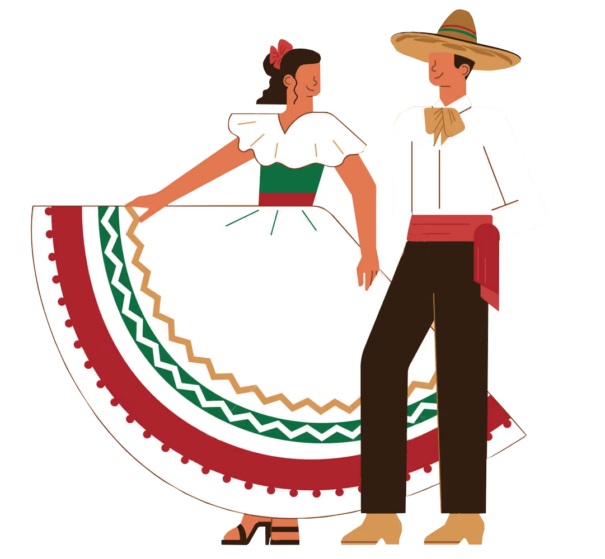
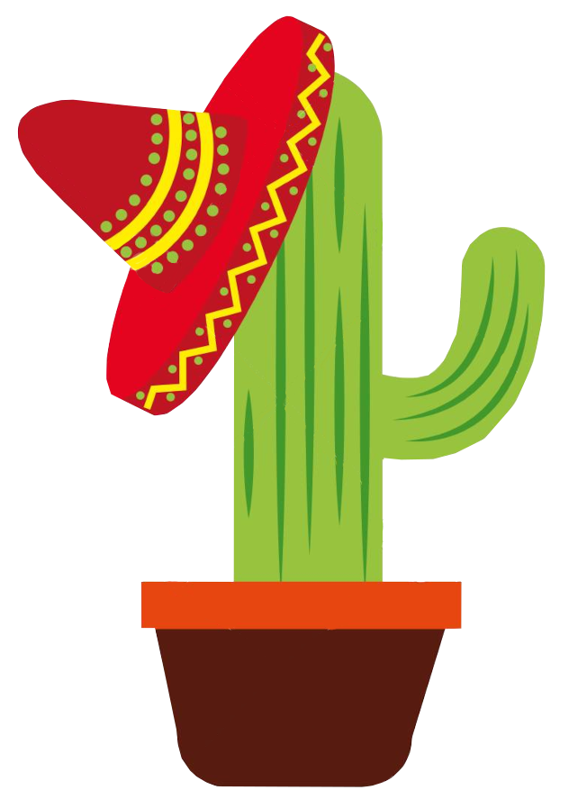

¡Aquí vamos!


Embarquez pour des vacances hors du commun
La grandeur de la cité Maya de Palenque, la splandeur des couchers de soleil sur les plages d'El Arco, L'audace des pyramides précolombiennes de Teotihucacán, L'immensité de la ville de Mexico City, ce sont toutes ces choses qui font la beauté du Mexique !
Avant votre voyage, apprenez en plus sur la culture, l'histoire et les traditions mexicaines grâce à nos pages d'informations dédiées, planifiez les étapes de votre voyage, puis choisissez votre vols et vos réservations afin de partir en à l'aventure l'esprit serein !
La culture mexicaine
Les éléments pratiques
Où allons nous ?
Crédits vidéo : Mexico in 4K - Hidden Gems & Incredible Scenes --- 4k Films by Adnan